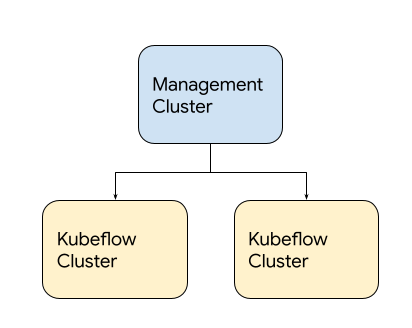

Version v1.5 of the documentation is no longer actively maintained. The site that you are currently viewing is an archived snapshot. For up-to-date documentation, see the latest version.
Overview
2 minute read
This guide describes how to deploy Kubeflow and a series of Kubeflow components on Google Kubernetes Engine (GKE).
Features
Kubeflow deployed on Google Cloud includes the following:
- Full-fledged multi-user Kubeflow running on Google Kubernetes Engine.
- Cluster Autoscaler with automatic resizing of the node pool.
- Cloud Endpoint integrated with Identity-aware Proxy (IAP).
- GPU and Cloud TPU accelerated nodes available for your Machine Learning (ML) workloads.
- Cloud Logging for easy debugging and troubleshooting.
- Other managed services offered by Google Cloud, such as Cloud Storage, Cloud SQL, Anthos Service Mesh, Identity and Access Management (IAM), Config Controller, and so on.
 Figure 1. User interface of full-fledged Kubeflow deployment on Google Cloud.
Figure 1. User interface of full-fledged Kubeflow deployment on Google Cloud.
Management cluster
Kubeflow on Google Cloud employs a management cluster, which lets you manage Google Cloud resources via Config Controller. The management cluster is independent from the Kubeflow cluster and manages Kubeflow clusters. You can also use a management cluster from a different Google Cloud project, by assigning owner permissions to the associated service account.
 Figure 2. Example of Kubeflow on Google Cloud deployment.
Deployment process
To set up a Kubeflow environment on Google Cloud, complete these steps:
- Set up Google Cloud project.
- Set up OAuth client.
- Deploy Management cluster.
- Deploy Kubeflow cluster.
For debugging approaches to common issues encountered during these deployment steps, see troubleshooting deployments to find common issues and debugging approaches. If the issue isn’t included in the list of commonly encountered issues, report a bug at googlecloudplatform/kubeflow-distribution.
Next steps
- Deploy Kubeflow Cluster.
- Run a full ML workflow on Kubeflow by using the end-to-end MNIST notebook.
Feedback
Was this page helpful?
Thank you! Send your feedback to us.
Sorry to hear that. Please tell us how we can improve.